From unpacking the program to your first marked square: installing, connecting, calibrating, the first job, keeping the program up to date, and staying safe with a 355 nm UV laser.
Read this first: UV support is new and untested
PhotonCanvas was built on the F2 Ultra (blue diode and MOPA fiber). Support for the F2 Ultra UV was added from xTool's own published description of how the UV takes jobs, but nobody has run PhotonCanvas on a real F2 Ultra UV yet. Every step here is written from the program as it is; where a step hasn't been tried on a UV, it says so. Start small, at low power, on scrap, and stay with the machine.
You need a PhotonCanvas version newer than 0.1.113 (the ? at the top right → About PhotonCanvas shows yours). Older versions list the UV but can't drive it properly.
In this guide
Before you start
Safety with a UV laser
Install PhotonCanvas
The first start: welcome window
Connect to the machine
Calibrate
Your first job
Install an update
What doesn't work on the UV yet
If something goes wrong
1Before you start
Have these ready:
The F2 Ultra UV unpacked and set up following xTool's own instructions (lens fitted, power, network). Do xTool's first-time setup in xTool Studio first, including any firmware update it offers and its own lens and camera setup.
xTool Studio installed on the same Windows computer. PhotonCanvas reads its connection keys from it (step 3 of the welcome window). You keep it installed afterwards.
The computer and the machine on the same Wi-Fi or wired network, or joined by the USB cable.
The PhotonCanvas program: PhotonCanvas-win-x64.zip (from whoever gave you PhotonCanvas).
Safety glasses rated for 355 nm (see the next section).
Scrap material to test on: card, plywood, plastic you know is safe, or anodized aluminium. Not PVC or vinyl.
2Safety with a UV laser
The F2 Ultra UV is a 5 W, 355 nm ultraviolet laser
The beam is near-invisible. The glow you see on the material is not the beam. Never look at the work area while the laser is on with the lid open.
Keep the lid closed while it runs. If you must watch with the lid open, wear safety glasses rated for 355 nm. Glasses for the blue diode or fiber lasers (455 nm, 1064 nm) do not protect against UV.
In Settings → Machine, leave Allow starting with the lid openunticked.
Never leave a job running unattended. Keep a fire extinguisher nearby.
Ventilate. Run the exhaust or purifier. Never laser PVC, vinyl or materials you aren't sure about: many plastics give off poisonous gas.
Check every job before pressing start. The preview is a guide, not a guarantee, and on the UV the program itself is untested.
To stop at once: Stop in PhotonCanvas's job bar, or on the machine a short press of its button pauses and a long press while paused cancels. Know where the machine's power switch is.
PhotonCanvas is free, independent hobby software, not made, endorsed or supported by xTool or Makeblock. It comes with no warranty, and using it may not be covered by your machine's warranty.
3Install PhotonCanvas
There is no installer. The program is a folder that carries everything it needs.
Unzip PhotonCanvas-win-x64.zip into a folder you can write to, for example C:\Users\<you>\Apps\PhotonCanvas. Avoid Program Files: updates need to write into the folder.
Open the PhotonCanvas folder and run PhotonCanvas.exe. If Windows SmartScreen warns about an unknown program, choose More info → Run anyway.
If Windows Firewall asks, allow PhotonCanvas on private networks. It needs this to find the machine.
Your own settings, connection keys, materials and calibration are kept in C:\Users\<you>\PhotonCanvas, separate from the program, so updating or moving the program loses nothing.
Opening PhotonCanvas connects to the laser
After the first start, PhotonCanvas looks for the machine and connects by itself every time it opens. Connecting never fires the laser or starts a job.
4The first start: welcome window
The first time PhotonCanvas opens, the Welcome to PhotonCanvas window takes you through six short steps. Next moves on and Back goes back.
Step 1 · Welcome
What the program is. Click Next.
Step 2 · Safety and terms
Read the safety notice and the disclaimer, tick I have read this, I understand the risks, and I accept these terms. and click Accept and continue. If you close the window without accepting, the program closes.
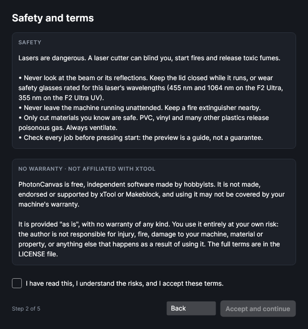
Step 2: the safety notice names 355 nm for the UV.
Step 3 · Connect your laser
xTool machines expect three connection codes. They don't come with PhotonCanvas; it finds them in your copy of xTool Studio.
Click Set up connection keys…
Click Find them in my xTool Studio. The keys are read in a few seconds. (You can also choose xTool Studio's program file yourself, or paste the keys.)
The step then says ✓ Connection keys are set up.
You can skip this and do it later in Settings → Connection.
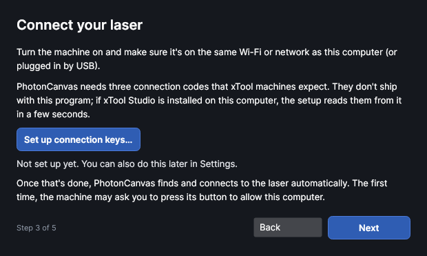
Step 3: one-time connection keys.
Step 4 · Your equipment: choose the F2 Ultra UV
This is the most important step for a UV owner. Under YOUR MACHINE, open the list and choose xTool F2 Ultra UV (or xTool F2 Ultra UV (Class 1) if you have the enclosed Class 1 model; both take jobs the same way).
With the UV chosen, PhotonCanvas:
sets the work area to 200 × 200 mm;
sends every layer to the UV laser, with a frequency of 40 to 150 kHz;
hides the tools that need the blue diode or the MOPA fiber laser (colour on metal, diffraction gratings, flip pictures, laser alignment, the diode/MOPA switch, overheat and galvo-timing settings, and the xTool material presets).
Tick an attachment only if you have one. Leave the extraction numbers as they are unless you know your fan settings.
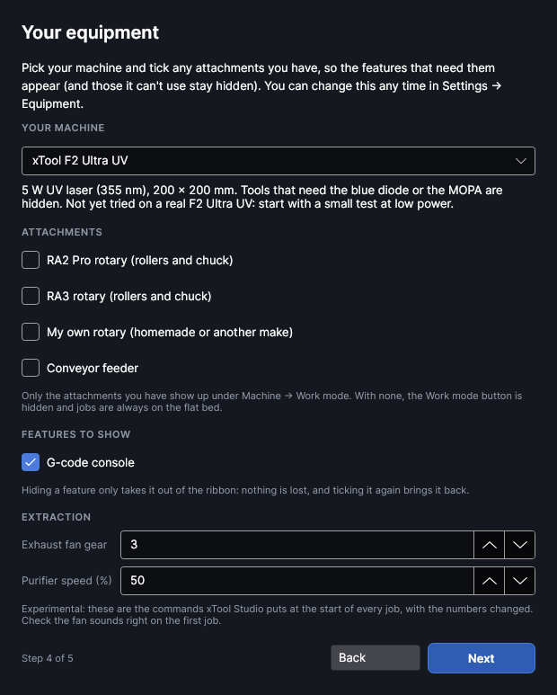
Step 4 with the F2 Ultra UV chosen.
Step 5 · Calibrate the camera
This step lines up the camera picture with where the UV laser marks, for the machine you picked in step 4. The box at the top says what the UV needs: the marks are burned with the UV laser over the whole 200 × 200 mm area.
Make sure you've done xTool's own lens and camera setup in xTool Studio (section 1), then close xTool Studio.
Turn the machine on and click Connect. The first time, the machine may ask you to press its button.
Lay a flat scrap sheet over the whole 200 × 200 mm area.
Click Calibrate camera…. Its window takes you through focusing, burning the marks, the photo and saving: section 6.3 describes each part.
The step then says ✓ The camera is calibrated for this machine. Not ready yet? Click Next to skip it, and calibrate later with Machine → Calibrate camera.
Step 6 · How a job works
A short summary. Click Start designing.
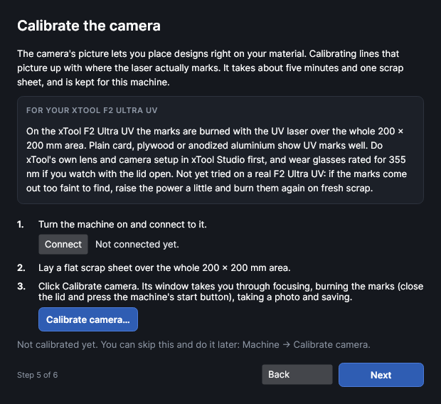
Step 5 for the F2 Ultra UV, before connecting.
You can change the machine later in Settings → Equipment (the same list) or Settings → Machines.
5Connect to the machine
Turn the F2 Ultra UV on and wait for it to finish starting up.
Look at the right end of the ribbon. PhotonCanvas tries to connect by itself; if it shows Not connected, click Connect.
The first time, the machine may ask you to allow this computer: press the button on the machine when it lights up or beeps.
When connected, the status shows the machine's name and state instead of Not connected, and the Auto-focus button appears beside it.
The connection status at the right end of the ribbon, before connecting.
If it doesn't find the machine
Open Settings (the gear at the top right, or Machine → Machine settings) and go to the Machine page:
Find machines searches the network again.
Or type the machine's IP address (xTool Studio or your router shows it) and click Connect.
Keep Connect automatically when the program starts ticked.
If it says the connection keys are missing, click Set up connection keys… (step 3 above).
Close xTool Studio while PhotonCanvas is connected: if another program is connected, the machine can refuse PhotonCanvas.
Untested on the UV
The UV uses the same connection protocol and keys as the F2 Ultra according to xTool's own software, but this hasn't been tried.
Settings → Machines lists every machine PhotonCanvas knows. Make sure xTool F2 Ultra UV is the one selected. If the F2 Ultra is selected instead, jobs would be written for the blue diode, which the UV doesn't have.
Another quick check: in the layer settings panel, a UV layer says UV laser · 355 nm and has a Frequency box, with no diode/MOPA switch.
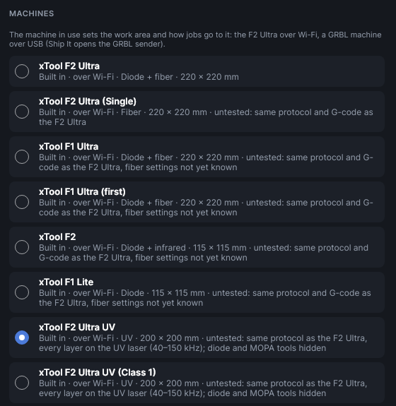
Settings → Machines with the F2 Ultra UV selected.
6Calibrate
Do these in order. The first is done in xTool Studio; the rest in PhotonCanvas.
6.1 xTool's own UV setup (in xTool Studio)
The F2 Ultra UV's lens and galvo calibration, its small-lens height calibration and firmware updates are xTool's, and PhotonCanvas doesn't do them. Do them in xTool Studio as xTool's manual describes, then close xTool Studio before connecting PhotonCanvas. The calibration is kept on the machine, so PhotonCanvas uses it too.
Use the standard lens
PhotonCanvas works with the UV's standard 200 × 200 mm field. It can't choose the small lens yet, so keep the standard lens fitted.
6.2 Focus
Every job needs the material in focus. Put the material under the head, then click Auto-focus at the right end of the ribbon (or on Settings → Machine). The machine measures the material and moves to the right height. Out of focus, marks come out faint or wide.
6.3 Calibrate the camera
This lines up the camera picture with where the laser actually marks, so you can place designs on the photo of your material. Machine → Calibrate camera opens a window with five steps:
Focus on the material. Lay a flat scrap (card or thin wood) over the whole 200 × 200 mm area and click Auto-focus on the material.
Burn marks. PhotonCanvas burns 25 small marks in a grid over the whole area (plus three small dots that show which way round it is). Keep the suggested power and speed for a first try; on the UV they're burned with the UV laser at its default frequency. Close the lid and press the machine's start button.
Photo. Take a photo of the marks with the machine's camera.
Locate the marks. PhotonCanvas finds them in the photo; follow the window's instructions for any it can't find.
Check and save. PhotonCanvas works out the correction; save it.
If you did this in step 5 of the welcome window, there's nothing more to do. Repeat only if you move the camera or the photo stops lining up. The calibration is kept for the F2 Ultra UV only: another machine in Settings → Machines has its own.
Untested on the UV
If the marks are too faint to find, raise the power a little and burn them again on a fresh scrap.
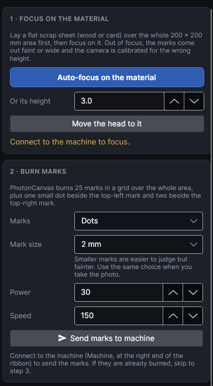
Calibrate camera, steps 1 and 2.
6.4 Find the right settings with a test grid
Each material needs its own power, speed and frequency. A test grid burns a set of small squares, each with different numbers, so you can pick the one you like.
Materials & Tests → Tests → Test grid.
Choose Power × speed. The UV starts at 40 kHz in kHz.
Click Add to design. The squares are added at the top-left of the work area, each on its own labelled layer.
Send it like any job (section 7), then read the best square's numbers off its layer name.
Once you have power and speed, run a second grid: choose Any two settings and put Frequency kHz (MOPA, UV) across (40 to 150 kHz): a higher frequency puts the pulses closer together for smoother, gentler marks.
Keep what works in Materials & Tests → Library. xTool's own material presets are for the diode and MOPA, so they're hidden on the UV.
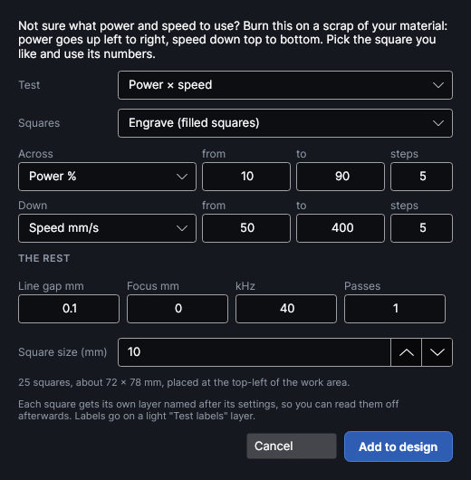
The test grid on the UV: 25 squares, 40 kHz.
7Your first job
A 30 mm square outline with "UV" engraved inside it, on scrap card or wood. The numbers below are a cautious starting guess, not a tested UV recipe: use your test grid results once you have them.
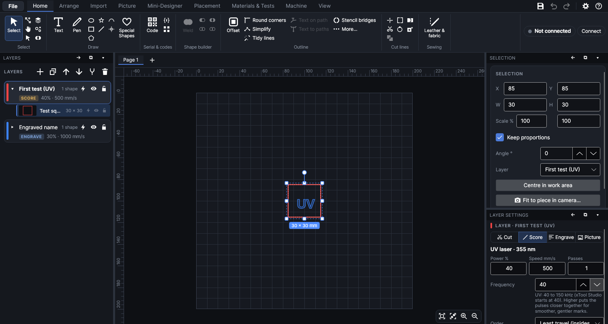
The first job: a square on a Score layer, the letters on an Engrave layer, and the UV layer settings on the right.
Connect (section 5). The status at the right end of the ribbon must show the machine.
Draw the square. On the Home tab, click the rectangle and drag on the work area. In the Selection panel on the right, type 30 in W (with Keep proportions ticked, H follows), then click Centre in work area. The grid square is the UV's 200 × 200 mm area; nothing outside it can be sent.
Choose what the laser does. Each shape sits on a layer (the Layers panel on the left). Select the layer and, in Layer settings, click Score: it marks along the outline without cutting.
Set the numbers:Power % 40, Speed mm/s 500, Passes 1, Frequency 40. The panel should say UV laser · 355 nm.
Add the text (optional). Click Text, click inside the square where the text should start, and type UV (the typing goes into the text box in the Selection panel). Add a new layer (Add layer, the + in the Layers panel), set it to Engrave at 30%, 1000 mm/s and 40 kHz, and move the text onto it with the Layer box in the Selection panel.
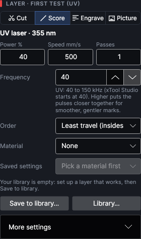
Layer settings on the UV: no diode/MOPA switch, a Frequency box from 40 to 150 kHz.
Place the material and focus. Lay the scrap in the middle of the bed and click Auto-focus.
Frame. Click Frame (in the job bar under the work area, or Machine → Frame). The first time, confirm with Start framing. The head traces round the job with a faint pointer, over and over. Move the material until the outline sits where you want it, then click Stop framing.
Ship It. Click Ship It (job bar, or Machine → Ship It). A summary lists each layer as UV 40 kHz with its power and speed, the size, the time and anything worth checking. Read it, then click Ship It in it to upload. Uploading never starts the laser.
Start. The job bar says Uploaded. Press the start button on the machine to begin. Close the lid, put on your glasses if you'll be near the machine, and press the machine's start button.
Watch it. The job bar follows the job. Pause and Stop are there while it runs. Stay with the machine until it finishes.
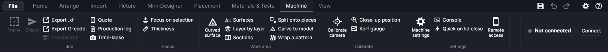
The Machine tab: Frame and Ship It on the left (they light up once connected), Calibrate camera in the middle, Machine settings on the right.
If the mark is too light or too dark
Too light or patchy: focus again, then raise the power or lower the speed a step. Too dark or melted: lower the power or raise the speed, or try a higher frequency. Change one thing at a time, and use a test grid (6.4) to find good numbers quickly.
8Install an update
New versions are published from time to time. Updating never touches your settings, keys, calibration or designs.
Automatic updates (recommended)
PhotonCanvas's updates are published in a private GitHub repository, so the program needs a GitHub access key to see them. Ask the person who gave you PhotonCanvas for one (a read-only key for this program only), then:
Open Settings → Updates.
Paste the key into GITHUB ACCESS KEY and click Save key. It's kept on this computer only.
Leave Check for a new version at start and Put new versions in by themselves ticked.
From then on, new versions download in the background and go in the next time you close PhotonCanvas (or straight away with the restart button at the bottom of the window). Check now looks at once.
With Put new versions in by themselves unticked, a window tells you about a new version at start, with Download, Skip this version and Later.
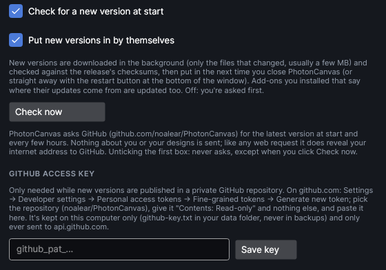
Settings → Updates, with the place for the GitHub access key.
Updating by hand
Get the new PhotonCanvas-win-x64.zip.
Close PhotonCanvas.
Unzip it over your existing PhotonCanvas folder, replacing the old files (or into a fresh folder, and delete the old one).
Start PhotonCanvas. The ? at the top right → About PhotonCanvas shows the new version.
Nothing of yours is in the program folder (it's all in C:\Users\<you>\PhotonCanvas), so nothing is lost.
9What doesn't work on the UV yet
PhotonCanvas covers flat marking, engraving and pictures on the UV. These things are not supported yet:
Feature
On the F2 Ultra UV today
Running on a real UV
Not tried yet. Everything UV is written from xTool's published job format.
Small lens and its height calibration
Not supported. Keep the standard 200 × 200 mm lens fitted; do lens setup in xTool Studio.
Inner engraving in glass or crystal (subsurface)
Not supported.
Galvo timing (per-lens delays)
Hidden on the UV; the machine's own settings from xTool Studio are used.
Riser, glass platform, sphere and cylinder modes
Not supported. The rotary attachments are written for the F2 Ultra and haven't been tried on the UV.
Colour on metal, diffraction gratings, flip pictures
Hidden: they need the MOPA fiber laser.
Align lasers, graphene tests
Hidden: they need the blue diode (and MOPA).
xTool material presets
Hidden: they're for the diode and MOPA. Your own Library entries still work.
Camera calibration
Available, but not yet tried on the UV's camera.
Designs made for an F2 Ultra open fine: when the UV is chosen, every layer runs on the UV laser and its MOPA pulse width is ignored. A frequency outside 40 to 150 kHz is refused when you send the job, with a message saying so.
10If something goes wrong
What you see
What to do
Status stays Not connected
Check the machine is on and on the same network (or USB). Close xTool Studio. Allow PhotonCanvas through Windows Firewall. Settings → Machine → Find machines, or type the IP address.
"Connection keys" message
Settings → Machine → Set up connection keys… → Find them in my xTool Studio. xTool Studio must be installed.
Work area is 220 × 220 mm, or layers show a diode/MOPA switch
The F2 Ultra is chosen, not the UV. Settings → Machines → xTool F2 Ultra UV.
"UV frequency" error when sending
Set the layer's Frequency between 40 and 150 kHz.
Something is outside the work area
The UV's area is 200 × 200 mm. Move or shrink the design until it's inside the grid.
Uploaded, but nothing happens
That's by design: press the start button on the machine, with the lid closed.
Marks faint, wide or uneven
Auto-focus again. Check the material lies flat. Then adjust power and speed with a test grid.
Camera picture doesn't line up
Machine → Calibrate camera again (6.3).
Anything else
The ? at the top right → Help guide (or F1) opens the full guide that comes with the program. Tell the person who gave you PhotonCanvas what happened, especially anything UV-specific: you're among the first to use it on a UV.